Info
Radomyr Husiev
variant - Voluntary Engagements
Results of the previous homework
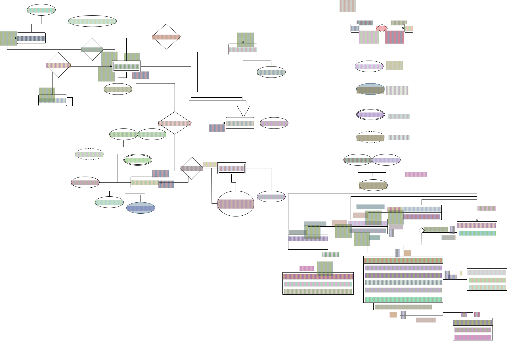
Converting to relational model of data and documenting it
Now let us convert the model to the relational one (a type of logical model). Due to limitations, we ca not simply change the style of the previous work. For example, we have to move TimePeriod (which was multivalued) into another relation with its own primary keys, we also ca not show the relationships between relations in a usual way.
However, I would still like to preserve relationships in some way. Therefore I will create some new tables and attributes to account for that. I will create tables for Studying, GivingGrants, Fundraising and DoingWork that would contain the information about who has relationships with who.
I also added the columns MoneyGiven and MoneyRaised for GivingGrants and Fundraising, as those were implicit in the relationship in the ERD and UML
I also read that it is not really possible to have a computed column, dependent on other tables that are dependent on this table. Therefore I decided to make a view WorkTime that would accomplish summing all TimePeriods of a VoluntaryWork
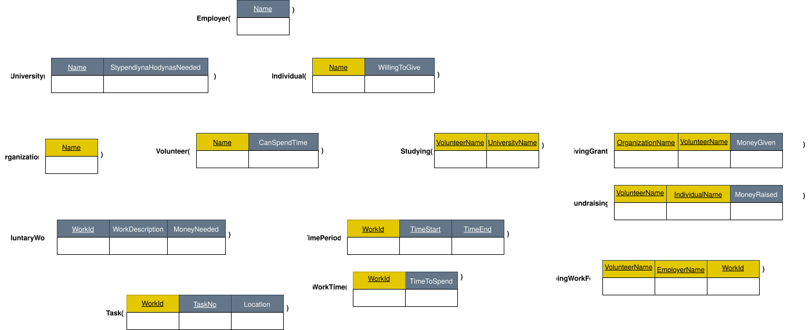
{width=900px}We can also represent the model using mysql’s workbench:
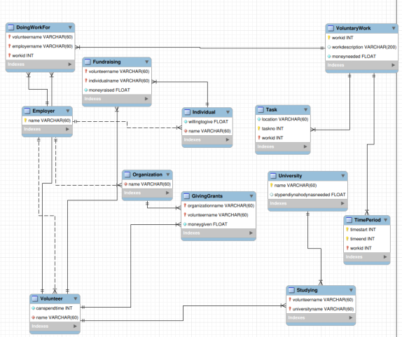
{width=600px}Creating the database and the tables
As mysql is hard to install properly, I used an already installed on my system open source version of it called mariadb. There should be no differences, especially for such simple tasks that we do, so I do not think it will change something, except make it easier to install.
First of all, I create the database:
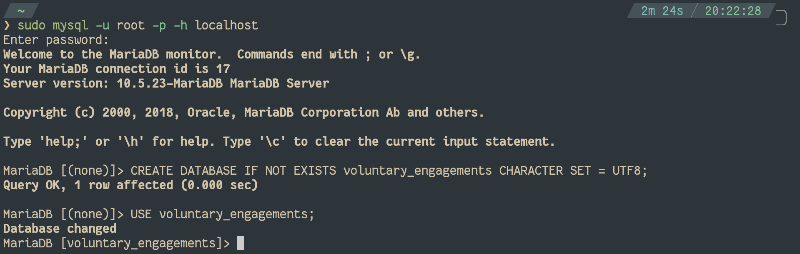
{width=600px}Next, I will create all the tables, according to the relational model I created in the previous task:
CREATE TABLE IF NOT EXISTS University (
name VARCHAR(60) NOT NULL PRIMARY KEY,
stypendiynahodynasneeded FLOAT -- In hours
);
CREATE TABLE IF NOT EXISTS Employer (
name VARCHAR(60) NOT NULL PRIMARY KEY
);
CREATE TABLE IF NOT EXISTS Organization (
name VARCHAR(60) NOT NULL,
INDEX (name),
FOREIGN KEY
(name) REFERENCES Employer (name)
ON DELETE CASCADE
ON UPDATE CASCADE,
PRIMARY KEY (name)
);
CREATE TABLE IF NOT EXISTS Volunteer (
canspendtime INT NOT NULL, -- In seconds
name VARCHAR(60) NOT NULL,
INDEX (name),
FOREIGN KEY
(name) REFERENCES Employer (name)
ON DELETE CASCADE
ON UPDATE CASCADE,
PRIMARY KEY (name)
);
CREATE TABLE IF NOT EXISTS Individual (
willingtogive FLOAT NOT NULL, -- In $
name VARCHAR(60) NOT NULL,
INDEX (name),
FOREIGN KEY
(name) REFERENCES Employer (name)
ON DELETE CASCADE
ON UPDATE CASCADE,
PRIMARY KEY (name)
);
CREATE TABLE IF NOT EXISTS VoluntaryWork (
workid INT NOT NULL PRIMARY KEY,
INDEX (workid),
workdescription VARCHAR(200),
moneyneeded FLOAT NOT NULL -- In $
);
CREATE TABLE IF NOT EXISTS TimePeriod (
timestart INT NOT NULL, -- In seconds since 1970 (UNIX time)
timeend INT NOT NULL, -- In seconds since 1970 (UNIX time)
workid INT NOT NULL,
PRIMARY KEY (timestart, timeend, workid),
FOREIGN KEY
(workid) REFERENCES VoluntaryWork (workid)
);
CREATE VIEW IF NOT EXISTS WorkTime AS
SELECT
VoluntaryWork.workid,
SUM(TimePeriod.timeend - TimePeriod.timestart) AS timetospend
FROM
VoluntaryWork
LEFT JOIN TimePeriod ON VoluntaryWork.workid = TimePeriod.workid
GROUP BY
VoluntaryWork.workid;
CREATE TABLE IF NOT EXISTS Task (
location VARCHAR(60) NOT NULL,
taskno INT NOT NULL,
workid INT NOT NULL,
PRIMARY KEY (taskno, workid),
FOREIGN KEY
(workid) REFERENCES VoluntaryWork (workid)
);
CREATE TABLE IF NOT EXISTS Studying (
volunteername VARCHAR(60) NOT NULL,
universityname VARCHAR(60) NOT NULL,
PRIMARY KEY (volunteername, universityname),
FOREIGN KEY
(volunteername) REFERENCES Volunteer (name),
FOREIGN KEY
(universityname) REFERENCES University (name)
);
CREATE TABLE IF NOT EXISTS GivingGrants (
organizationname VARCHAR(60) NOT NULL,
volunteername VARCHAR(60) NOT NULL,
moneygiven FLOAT NOT NULL, -- In $
PRIMARY KEY (organizationname, volunteername),
FOREIGN KEY
(organizationname) REFERENCES Organization (name),
FOREIGN KEY
(volunteername) REFERENCES Volunteer (name)
);
CREATE TABLE IF NOT EXISTS Fundraising (
volunteername VARCHAR(60) NOT NULL,
individualname VARCHAR(60) NOT NULL,
moneyraised FLOAT NOT NULL, -- In $
PRIMARY KEY (volunteername, individualname),
FOREIGN KEY
(volunteername) REFERENCES Volunteer (name),
FOREIGN KEY
(individualname) REFERENCES Individual (name)
);
CREATE TABLE IF NOT EXISTS DoingWorkFor (
volunteername VARCHAR(60) NOT NULL,
employername VARCHAR(60) NOT NULL,
workid INT NOT NULL,
PRIMARY KEY (volunteername, employername, workid),
FOREIGN KEY
(volunteername) REFERENCES Volunteer (name),
FOREIGN KEY
(employername) REFERENCES Employer (name),
FOREIGN KEY
(workid) REFERENCES VoluntaryWork (workid)
);As MySql does not allow for queries inside columns (it is unsafe to allow, if I understand correctly), to accomplish the task of computing WorkTime’s timetospend, I used a View instead of a Table.
Other than that there are not significant differences from the relational model and it is just a matter of transliterating relational model’s tables into DDL tables using the documentation
DML queries
Population
I use the standard way of populating:
LOAD DATA
INFILE "......./university.csv"
INTO TABLE University
FIELDS TERMINATED BY ','
LINES TERMINATED BY '\n';
...
...It is the same for every table, just the name of csv is changed, so I will not include the full list here, as it can be deducted easily.
And here are the csvs:
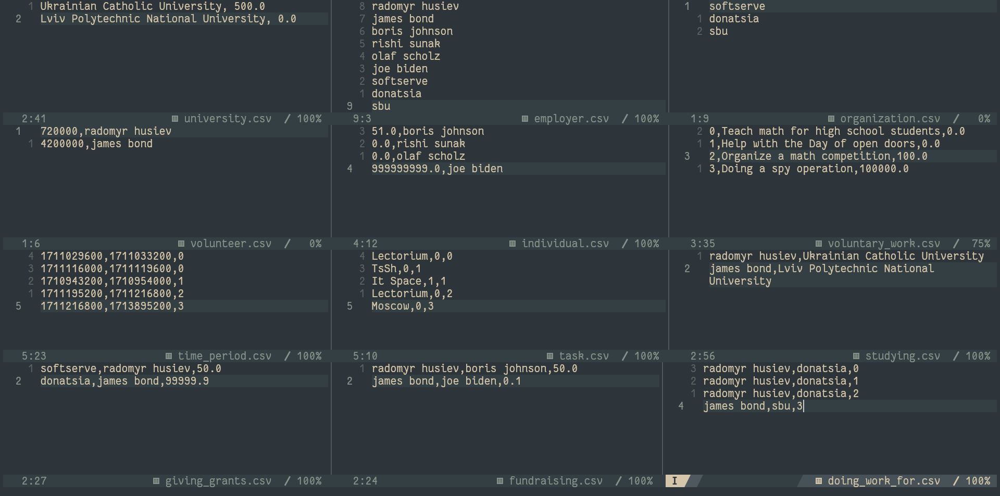
{width=1000px}Select data
Union
We will find all organizations and individuals that are actively donating and how much they donate:
SELECT organizationname AS name, moneygiven AS money FROM GivingGrants
UNION
SELECT individualname AS name, moneyraised AS money FROM Fundraising;+---------------+---------+
| name | money |
+---------------+---------+
| donatsia | 99999.9 |
| softserve | 50 |
| joe biden | 0.1 |
| boris johnson | 50 |
+---------------+---------+
Intersection
Find volunteers that receive money both from organizations and individuals:
SELECT volunteername FROM GivingGrants
INTERSECT
SELECT volunteername FROM Fundraising;+----------------+
| volunteername |
+----------------+
| james bond |
| radomyr husiev |
+----------------+
Difference
Find people that are not donating actively (to encourage them):
SELECT name FROM Individual
EXCEPT
SELECT individualname FROM Fundraising;+-------------+
| name |
+-------------+
| olaf scholz |
| rishi sunak |
+-------------+
Now we know who does not donate!
Cartesian product
Find all possible variations on when can each location be used:
SELECT * FROM Task, TimePeriod WHERE Task.workid = TimePeriod.workid;+-----------+--------+--------+------------+------------+--------+
| location | taskno | workid | timestart | timeend | workid |
+-----------+--------+--------+------------+------------+--------+
| Lectorium | 0 | 0 | 1711029600 | 1711033200 | 0 |
| Lectorium | 0 | 0 | 1711116000 | 1711119600 | 0 |
| TsSh | 0 | 1 | 1710943200 | 1710954000 | 1 |
| Lectorium | 0 | 2 | 1711195200 | 1711216800 | 2 |
| Moscow | 0 | 3 | 1711216800 | 1713895200 | 3 |
| It Space | 1 | 1 | 1710943200 | 1710954000 | 1 |
+-----------+--------+--------+------------+------------+--------+
For some reason the cross join does not work the same way we learnt at relational algebra lecture, and does not automatically consider only those rows that have the same values on shared columns. Therefore, I needed to do that manually, and still there appeared 2 same columns in the end result.
Selection
Find all work that does not require any money:
SELECT * FROM VoluntaryWork WHERE moneyneeded = 0;+--------+-------------------------------------+-------------+
| workid | workdescription | moneyneeded |
+--------+-------------------------------------+-------------+
| 0 | Teach math for high school students | 0 |
| 1 | Help with the Day of open doors | 0 |
+--------+-------------------------------------+-------------+
Projection
Get all the location used by volunteers:
SELECT location FROM Task;+-----------+
| location |
+-----------+
| Lectorium |
| TsSh |
| Lectorium |
| Moscow |
| It Space |
+-----------+
Thetajoin
Find all people who don’t receive more from organizations than from individuals:
SELECT GivingGrants.volunteername
FROM
GivingGrants JOIN Fundraising
ON
GivingGrants.volunteername = Fundraising.volunteername
AND
GivingGrants.moneygiven <= Fundraising.moneyraised;+----------------+
| volunteername |
+----------------+
| radomyr husiev |
+----------------+
Update data
Make Olaf Scholz want to donate!
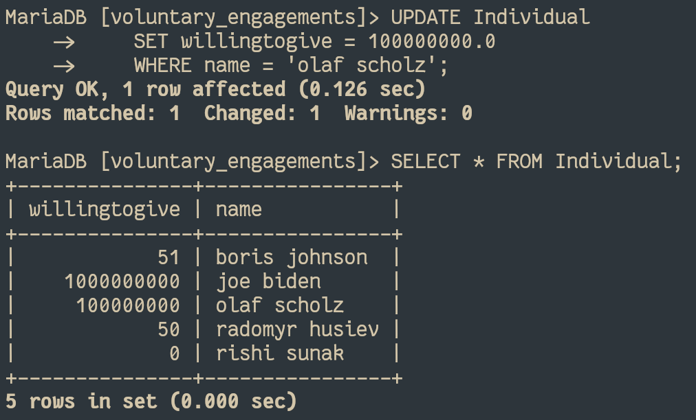
{width=600px}Move the second time slot to the work 1 (primary and foreign key at the same time):
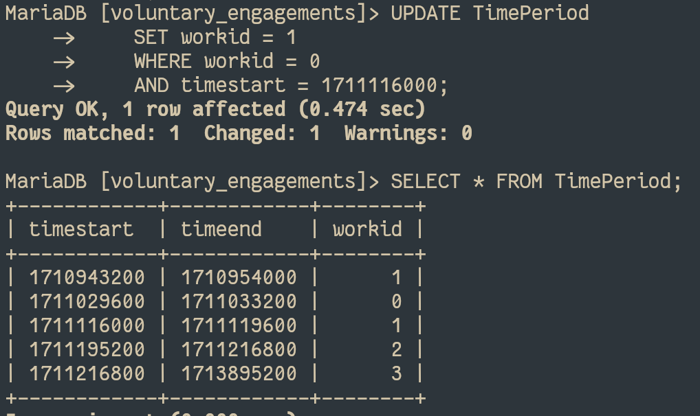
{width=600px}Add new data
Make radomyr husiev also an individual that can donate:
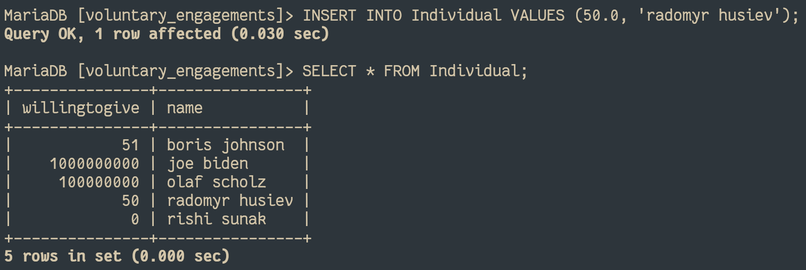
{width=600px}Add a new work:
INSERT INTO VoluntaryWork (workid, workdescription, moneyneeded) VALUES (4, 'Sort humanitarian aid', 0.0);
INSERT INTO Task (location, taskno, workid) VALUES ('Warehouse', 0, 4);
INSERT INTO TimePeriod (timestart, timeend, workid) VALUES (1713632400, 1713646800, 4);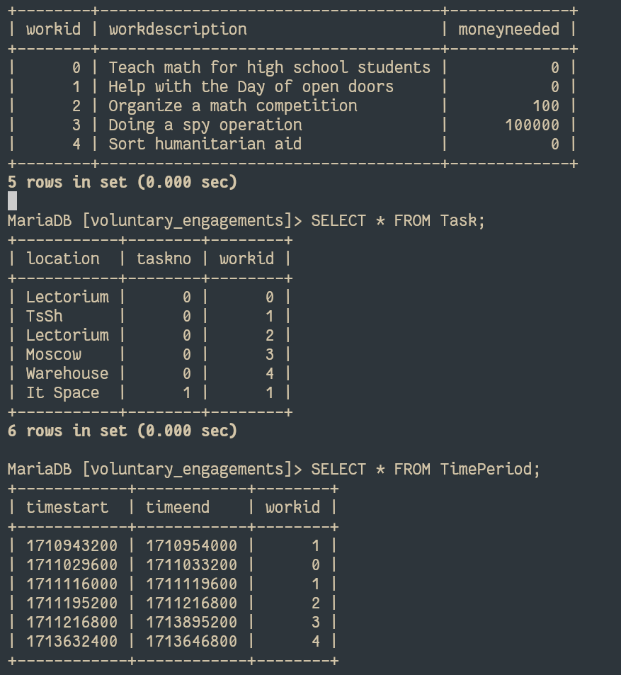
{width=600px}There was mentioned that an INSERT query has to add data to several tables, but I went through the documentation and search the Internet and came to the conclusion that a single INSERT query is not allowed to interfere with a few different tables at once. Therefore I made a few queries to accomplish this.
Make radomyr husiev donate 42.0$:
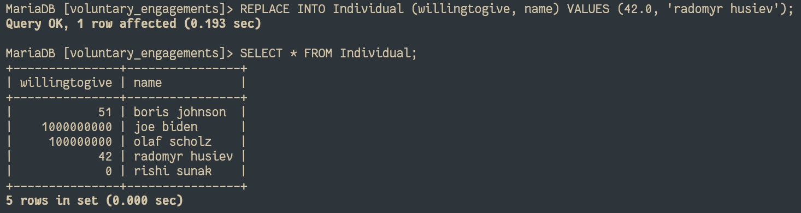
{width=600px}As we can see, the REPLACE changes the existing row, if the one with the same primary key exists (to be more precise, deletes the existing and inserts a new one). If we do the same with INSERT, we will not get the same:
[voluntary_engagements]> INSERT INTO Individual (willingtogive, name) VALUES (42.0, 'radomyr husiev');
ERROR 1062 (23000): Duplicate entry 'radomyr husiev' for key 'PRIMARY'
Delete data
Oops, the poor people donating <1$ were robbed!
It also deleted from the Individual, because name is a Foreign key for Individual from Employer with cascading on deletion:
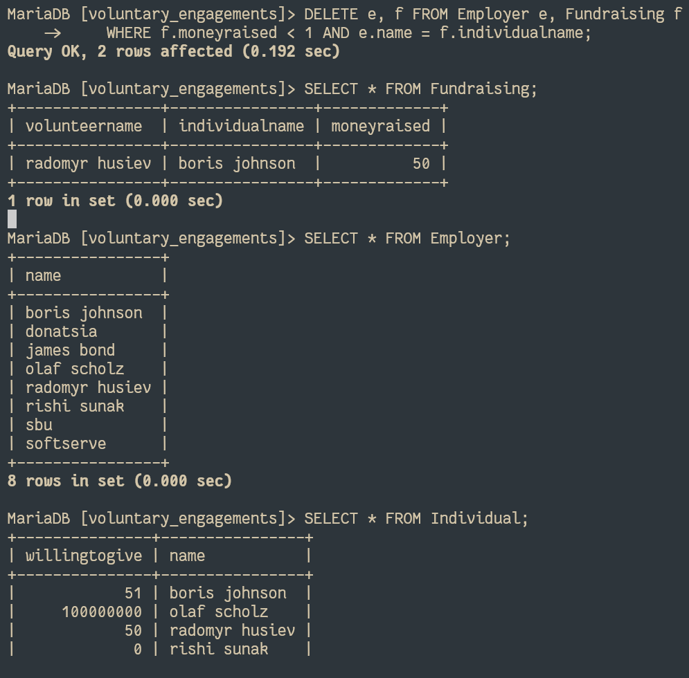
{width=600px}A pickpocketer also pickpocketed everybody rich (>100,000$):
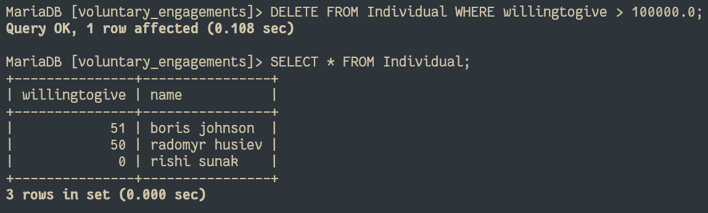
{width=600px}Conclusive remarks
For me MySQL was not very convenient to use. First of all, it lacked a proper installation on Linux (adding their repository or using an open source fork - mariadb). It is an important part, as it defines how easy it is to setup the environment for defining and manipulating data.
Another caveat was that some expressions behaved unexpectedly. For example, cross join did not behave like the cartesian product we learnt during the relational algebra lecture; when searching for REPLACE in the internet for some examples, they provided the REPLACE() function, instead of the REPLACE query. Also, the specification for homework said to use INSERT to add data to several tables, which seems to be impossible in MySQL.
The most annoying part, though, was the formatting. It was hard to make sure that all the queries are split into several consistent lines, with commas at the right places (not once did I fail at this and spent lots of time trying to figure our, why my query was incorrect, just to realise there was a trailing or missing comma), everything uppercase, etc.
However, if there was an autoformatter, a better comma handling and a style of writing in lowercase instead of uppercase, MySQL (and to extension SQL in general) is a pretty convenient way to handle the definition and manipulation of data.